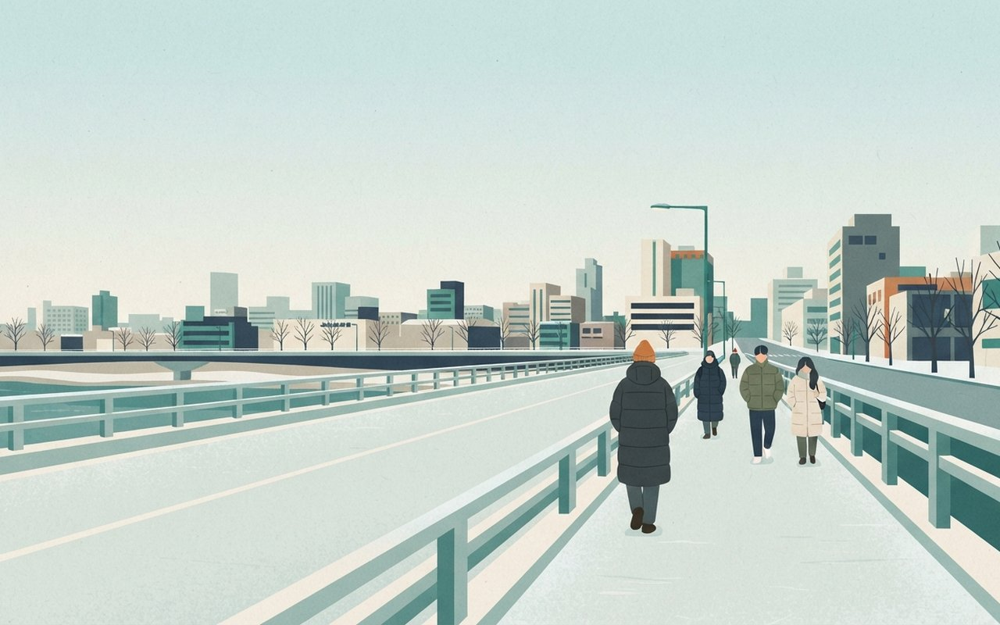

토요일 충청·호남·제주 비나 눈, 일요일 서울 아침 영하 2도 — 토요일 밤 교량·고갯길 살얼음, 30일(월)엔 다시 15도
28일(토) 서울은 아침 최저 3도, 낮 최고 8도로 예보됐고, 29일(일)은 아침 최저 영하 2도까지 내려간다(에너지경제·아시아투데이). 일요일 낮 최고는 8도다(에너지경제·파이낸셜뉴스). 28일 비나 눈은 충청·전라·경상 내륙·제주를 중심으로 아침부터 밤까지 온다. 예상 적설은 전북 동부 1~3㎝, 제주 산지 1~5㎝다(에너지경제·파이낸셜뉴스·아시아투데이).
28일 밤부터 29일 새벽까지 교량과 고지대 도로에 살얼음이 낄 수 있다(파이낸셜뉴스·아시아투데이). 28일 전국 대부분에서 순간풍속 초속 15m 안팎의 바람이 분다(아시아투데이·파이낸셜뉴스). 30일(월)에는 기온이 다시 올라 서울 낮 최고가 15도까지 오른다(파이낸셜뉴스·아시아투데이).
- 28일(토)서울 최저 3도 · 최고 8도 · 비·눈은 충청·전라·경상 내륙·제주 중심(아침~밤)
- 29일(일)서울 최저 영하 2도(−2도) · 최고 8도
- 적설전북 동부 1~3㎝ · 제주 산지 1~5㎝
- 도로·바람28일 밤~29일 새벽 교량·고지대 살얼음 · 28일 순간풍속 초속 15m 안팎
- 30일(월)서울 최고 15도로 다시 오름
- 확인 한계26일 발표 예보 기준 ⚠ 변동 가능 — 출발 전 최신 예보 확인
토요일과 일요일 낮 기온은 같은 8도지만, 아침은 하루 사이 5도가 떨어진다. 토요일 밤 비나 눈이 온 지역으로 일요일 이른 아침 차를 몬다면 다리 위와 고갯길이 가장 위험하다. 출발을 해가 뜬 뒤로 미루는 게 낫다.
주말 서울, 하루 새
아침 기온 뚝
토요일엔 충청·호남·제주 등에 비나 눈이 와요. 일요일 서울 아침은 영하로 떨어지고, 토요일 밤엔 다리 위·고갯길 살얼음을 조심하세요.
토 서울 아침|3도|일 서울 아침|−2도
2026-11-28~2026-11-29
30일(월) 서울 낮 15도로 다시 풀려요
A quiet Korean city street on a cold early winter Sunday morning, thin frost on a bridge railing and road, pale clear sky, people in padded coats, flat illustration, no text, no logos, no recognizable faces
